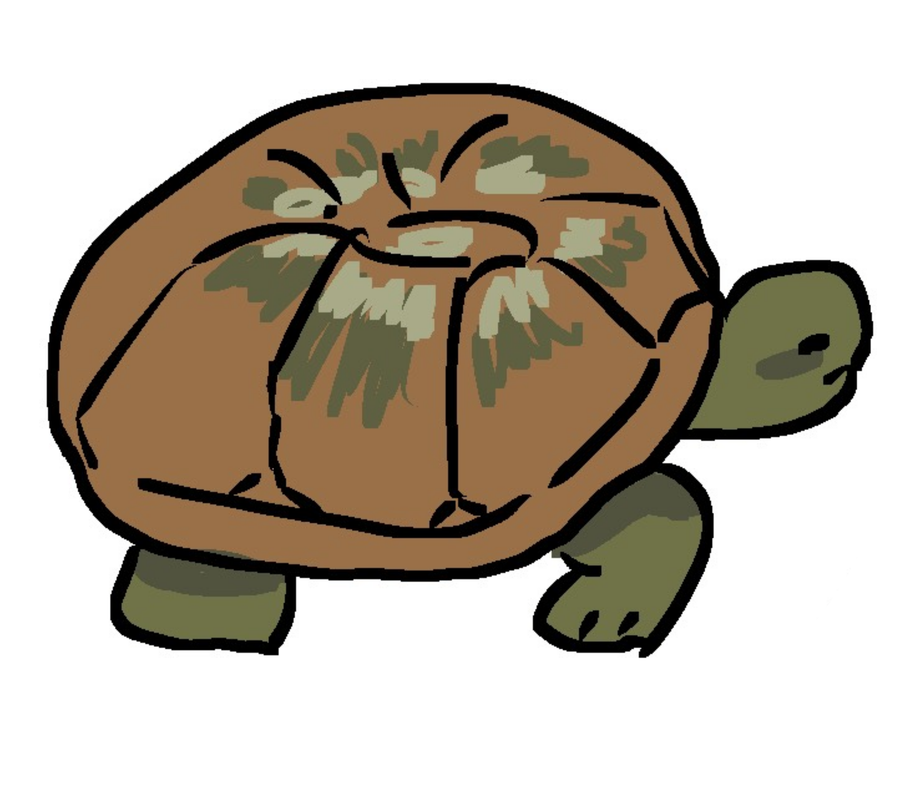
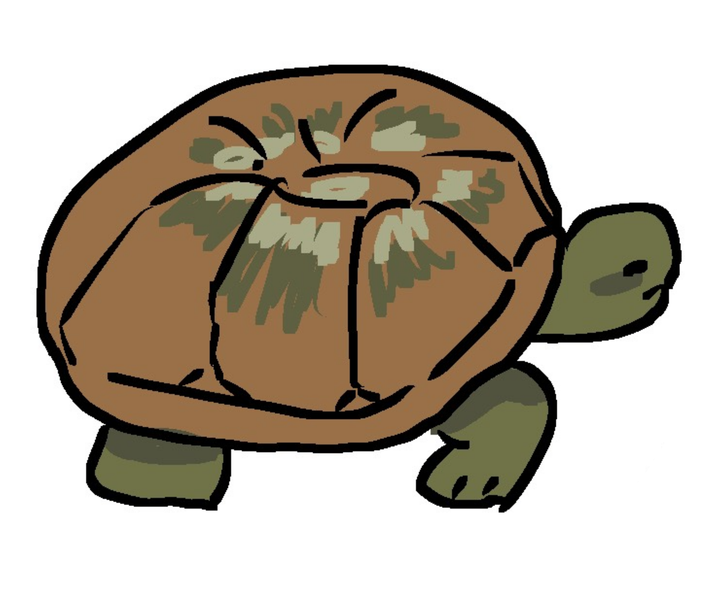

En el mundo rarámuri, el concepto de "moneda" trasciende por completo la noción del dinero metálico o papel; la verdadera circulación de valor se fundamentaba en un sofisticado sistema de intercambio y reciprocidad. Aún así, los raramuri han adaptado su lenguaje a las monedas que nosotros utilizamos. Presiona los botones para ver las traducciones.
La Sierra Tarahumara, hogar del pueblo Rarámuri, es un mosaico de ecosistemas que alberga una flora asombrosamente diversa. Desde las arboledas de pinos y encinos en las alturas, donde se cosecha el piñón, hasta las áridas zonas de cactáceas como el gigantesco sotol y el peyote, utilizado en ceremonias ancestrales, cada planta tiene un propósito. Este mundo vegetal no es solo un escenario, sino una farmacia, una despensa y un espacio sagrado. Especies como el álamo en los arroyos y los ocotes (pinos) proporcionan recursos esenciales para la vida cotidiana, la construcción de viviendas y la elaboración de artesanías, tejiendo una relación de profundo respeto y utilidad entre la gente y el bosque.
En cuanto a la fauna, las barrancas y bosques rarámuri son el reino de criaturas adaptadas a la compleja geografía. Entre los riscos y los senderos corren el venado cola blanca, animal de gran significado cultural y cacería ritual, y el temido puma, que comparte el territorio con el más elusivo jaguar. Los cielos son surcados por águilas reales y una variedad de pájaros carpinteros, mientras que los ríos albergan la trucha, un recurso alimenticio vital. Para los Rarámuri, estos animales no son simples vecinos silvestres; son seres con los que se comparte la tierra, protagonistas de mitos fundacionales y símbolos de fortaleza y agilidad, cualidades que este pueblo de "pies ligeros" encarna y admira.

 
